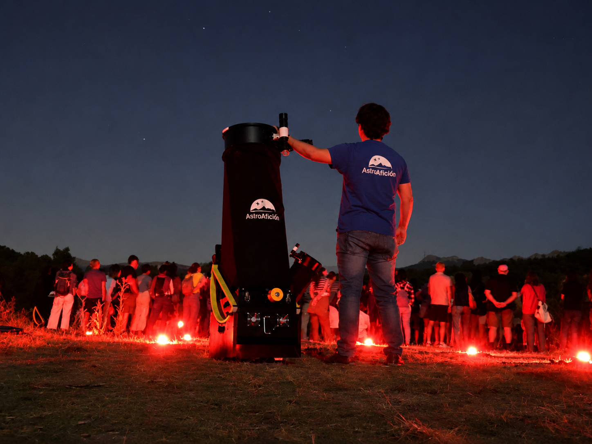
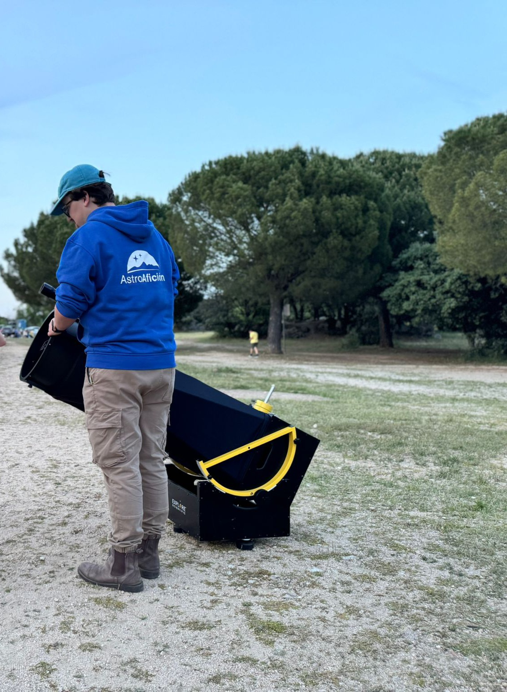
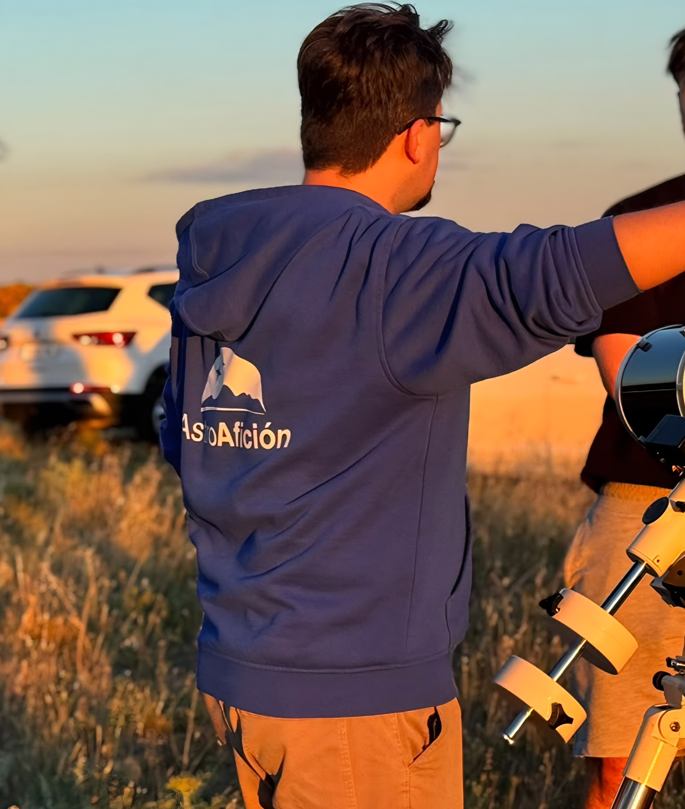
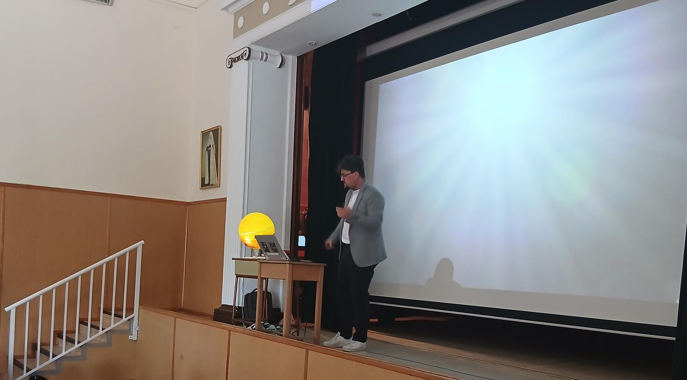

Chronos
Bayesian hierarchical age inference for young stellar populations using lithium abundances, effective temperatures and neural-network emulators.
Code on GitHub →Astrophysics
I work on stellar ages at the Centro de Astrobiología (CAB), combining Bayesian inference, stellar diagnostics and young stellar populations. This site brings together my research, publications, code, astrophotography and an interactive 3D atlas of the solar neighbourhood.
Research
Bayesian hierarchical age inference for young stellar populations using lithium abundances, effective temperatures and neural-network emulators.
Code on GitHub →Interactive 3D context for bright stars, open clusters, associations, molecular clouds and nearby dust structures.
Open 3D map →Work in progress: a spectral synthesiser with Bayesian inference for stellar diagnostics and atmospheric parameters.
Development repository →Publications
Refereed article
Bayesian hierarchical lithium-age model validated on the Pleiades, combining lithium abundances, effective temperatures and a neural-network emulator trained on BT-Settl predictions.
Conference contribution
Educational material and practical activities based on the Spanish Virtual Observatory, designed to introduce astronomical data access and analysis in teaching contexts.
Astrophotography
Passionate about bringing the Cosmos closer to people and preserving memories from my observing nights, from my first 90 mm Cassegrain to my current SkyWatcher 150 mm. Capturing images with a Canon R50 camera, I have enjoyed more than ten years of glimpsing the wonders hidden in the starry night. Here are some of them.

Outreach

Alongside my research and astrophotography, I participate as an astronomy monitor in leisure and outreach activities with Astroafición. My goal is to bring the mysteries and beauty of the Cosmos to audiences of all ages in an accessible, entertaining and memorable way.
Visit Astroafición →


Profile
Choose a language to preview the CV inside the page. The direct PDF links remain available for download or opening in a new tab.
Your browser could not render the PDF preview here. Use the link above to open it.
Repositories and profiles
@luisgonzalezramirez
0009-0008-8152-8435
@lewisjr27798
Publication list
Main email: lgrjr27798@gmail.com
Alternative emails: luigon07@ucm.es · lgonzalez@cab.inta-csic.es